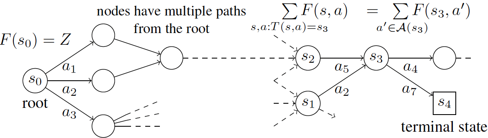
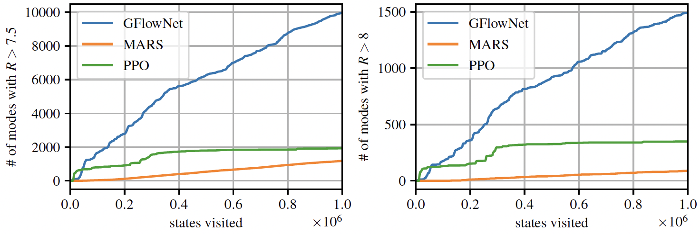
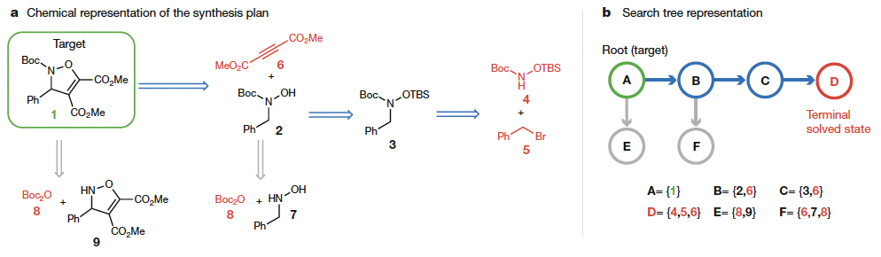
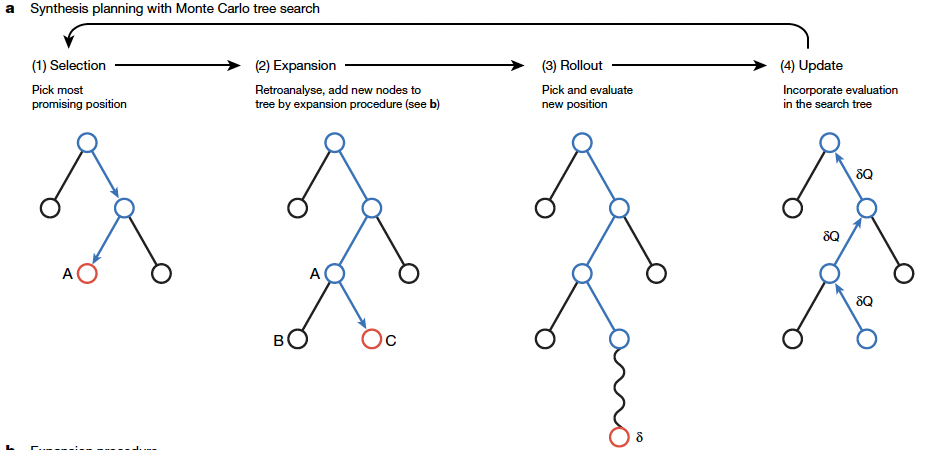
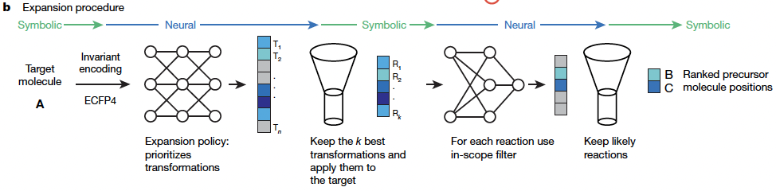
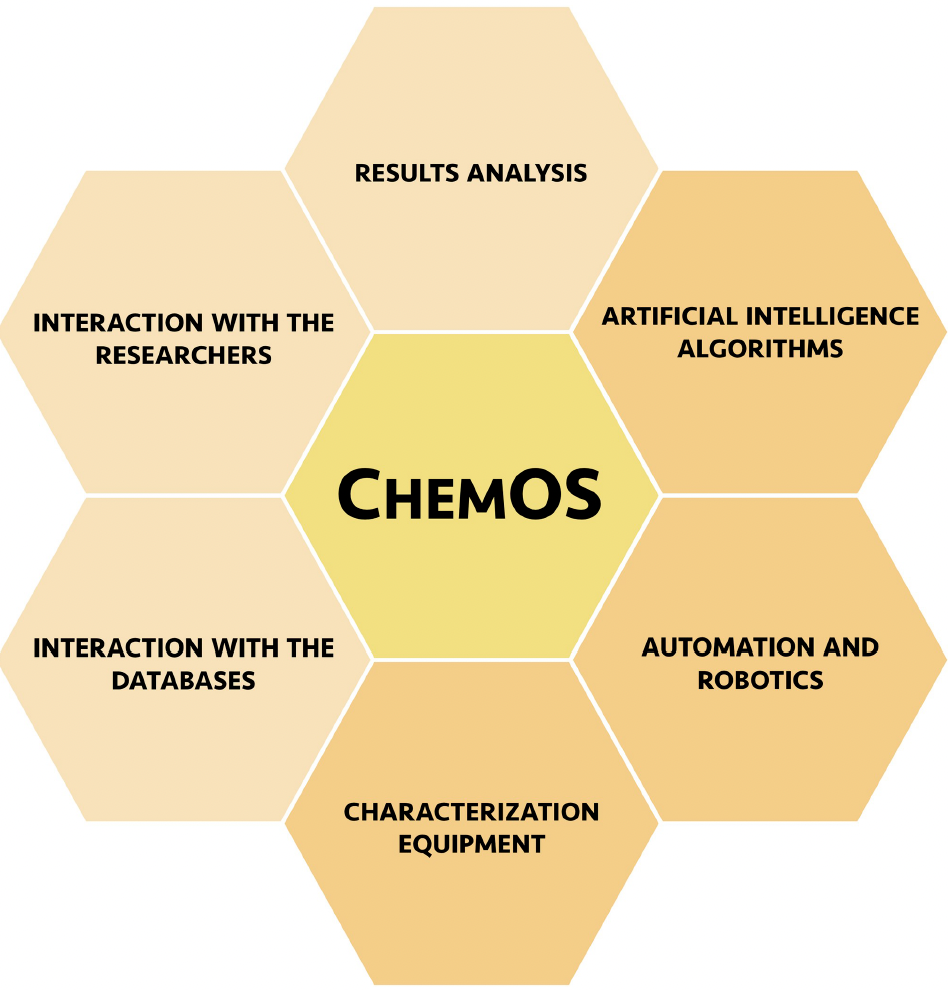
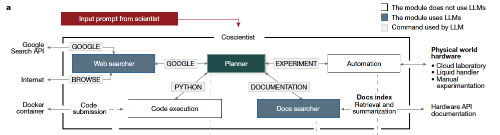
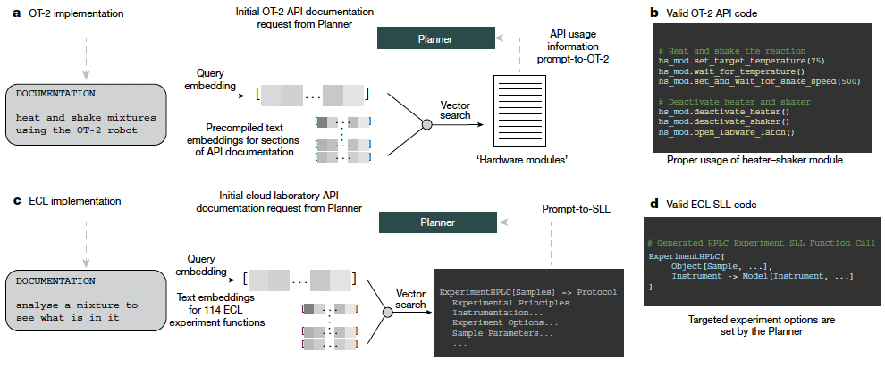
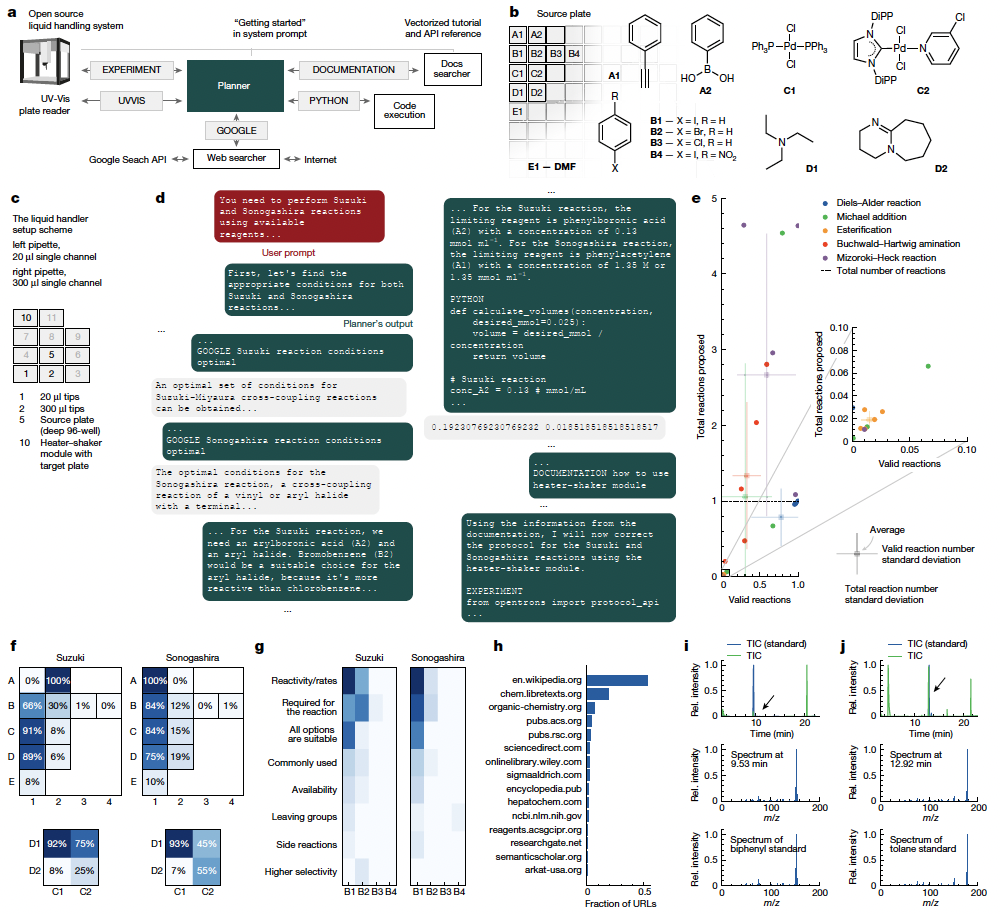

Saptarashmi Bandyopadhyay
CSc 59867-E: Senior Project II
AI Agents for Decision Making in the Real World
Scientific Agents: Design, Synthesis, and Autonomous Discovery
By Saptarashmi Bandyopadhyay
Email: sbandyopadhyay@ccny.cuny.edu
Assistant Professor of Computer Science
City College of New York and Graduate Center at CUNY
September 28, 2026 CSc 59867 - E
Saptarashmi Bandyopadhyay
Lecture Agenda & Discovery Roadmap
Part I: Foundations
The Autonomous Discovery Shift
From Edisonian trial-and-error to closed-loop learning. Molecular graph representations, discrete action MDPs, and non-injective DAG topologies.
Part II: Inverse Design
Generative Flow Networks (GFlowNets)
Why standard RL mode-collapses on biological surrogates. Flow conservation equations, trajectory flow matching, and diverse scaffold discovery.
Part III: Planning
Retrosynthesis & 3N-MCTS
The physical synthesizability barrier. Chemical reaction game trees, expansion policies, in-scope filtering, and double-blind human validations.
Part IV: Execution & Safety
Self-Driving Labs & Governance
Distributed orchestration (ChemOS), live Bayesian reaction optimization demo, Coscientist LLM tool-use, and deterministic biosecurity firewalls.
Saptarashmi Bandyopadhyay
The Shift to Closed-Loop Autonomous Science
- Classical materials/drug discovery relies on manual hypothesis formulation, serial bench chemistry, and intuitive trial-and-error, which often takes 10 to 20 years from lead to deployment.
- HTS (High-Throughput Screening) vs. Adaptive Agents: Static HTS blindly tests pre-enumerated libraries, whereas closed-loop agents adapt their search policy online based on experimental telemetry.
Manual Scientific Discovery (e.g. Edison)
10 – 20 Years
Literature Hypotheses
→
Serial Bench Chemistry
→
Manual Assays
→
High Attrition / Failure
Self-Driving Laboratory Cycle (e.g. Co-Scientist)
Hours – Days
AI Agent Policy
→
Robotic Execution
→
Inline Analytics
→
Bayesian Update ↺
Saptarashmi Bandyopadhyay
Molecular Representations: Discrete Graphs & DAGs
- Graph Formalism: A molecule is formalized as an attributed, labeled graph $m = (V, E)$, with atoms as vertices $v \in V$ and covalent bonds as edges $e \in E$.
- Sequential MDP: States $s_t$ represent partially constructed fragments; actions $a_t$ represent discrete atom or fragment attachments.
- Non-Injective Trajectories: Different action sequences yield identical molecules (e.g., adding C-C then -OH versus C-O then C-C). The state space is a DAG, not a tree.
Distinct permutations converge to the same target: DAG state space
Saptarashmi Bandyopadhyay
Why Standard RL Fails in Chemical Design
- The Reward Maximization Pitfall: Traditional RL maximizes expected return $\max_\pi \mathbb{E}_\pi [R(x)]$, collapsing probability mass onto a single trajectory mode.
- Surrogate Exploitation: Biological proxies (docking scores) are imperfect. Over-optimizing one narrow peak exploits surrogate artifacts (false positives).
- Diversity Requirement: Lead discovery demands candidate ensembles spread across distinct functional modes to survive downstream assay attrition.
Saptarashmi Bandyopadhyay
Generative Flow Networks (GFlowNets): Core Theory
- The Sampling Objective: Train a stochastic policy $\pi(a\vert s)$ such that the terminal sampling probability is proportional to a positive reward: $$\pi(x) = \frac{R(x)}{Z} = \frac{R(x)}{\sum_{x' \in \mathcal{X}} R(x')}$$
- Network Flow Formulation: State DAG acts as a flow network: source $s_0$ enters with flow $F(s_0) = Z$; terminal sinks exit with flow $R(x)$.
- Flow Consistency: At every intermediate state $s'$, incoming flow equals outgoing flow: $$\sum_{s, a : T(s, a) = s'} F(s, a) = R(s') + \sum_{a' \in \mathcal{A}(s')} F(s', a')$$

Fig. 1 — Bengio et al. (2021), arXiv:2106.04399
Saptarashmi Bandyopadhyay
GFlowNet Training: The Flow-Matching Objective
- Analog to TD Learning: GFlowNet parameters $\theta$ minimize flow conservation violations across visited trajectories without state enumeration.
- Log-Flow Loss: Because flows grow exponentially near $s_0$, estimators parameterize log-flows $F_\theta^{\log}(s, a) = \log F(s, a)$:
$$\begin{aligned} \mathcal{L}_{\theta, \epsilon}(\tau) = \sum_{s' \in \tau, s' \ne s_0} \Big( &\log \Big[ \epsilon + \sum_{s, a : T(s,a) = s'} \exp F_\theta^{\log}(s,a) \Big] \\ &- \log \Big[ \epsilon + R(s') + \sum_{a' \in \mathcal{A}(s')} \exp F_\theta^{\log}(s',a') \Big] \Big)^2 \end{aligned}$$
- Off-Policy Exploration: Constraints depend purely on network topology and endpoint rewards, enabling bias-free off-policy training.
Tree branching vs. DAG flow conservation
Saptarashmi Bandyopadhyay
Case Study: De Novo Small-Molecule Design
- Assembly Framework: Discrete chemical fragments joined into junction tree representations. Actions select fragment additions and stem attachment atoms.
- Target Objective: High binding affinity to soluble epoxide hydrolase (sEH), scored via an MPNN proxy of AutoDock Vina binding energy.
- Mode Discovery: GFlowNets discovered $>1{,}500$ distinct high-affinity modes ($R(x) > 8$), compared to $<100$ modes for PPO and MARS baselines.
- Diversity: Average pairwise Tanimoto similarity was $0.44$ vs $0.62$ for PPO (lower indicates greater diversity).

Fig. 5 — Bengio et al. (2021), arXiv:2106.04399
Saptarashmi Bandyopadhyay
The Synthesizability Barrier in Generative Design
- Generative models readily produce billions of theoretical chemical graphs exhibiting optimal binding metrics, yet upwards of $99\%$ cannot be physically synthesized in a laboratory.
- Hidden Physical Constraints: Unstable chemical bonds, steric strains, and inaccessible stereocenters are completely invisible to naive graph rewards. Production is strictly bounded by the availability of stable, commercial precursors.
- Forward vs. Retrosynthetic Search: Forward prediction computes product $C$ from known reactants $A + B$. Retrosynthesis inverts this challenge: recursively breaking down target $C \Rightarrow B \Rightarrow A$ until reaching catalog building blocks $\mathcal{B}$.
Saptarashmi Bandyopadhyay
Retrosynthesis Formalized as an MDP
- State Space $\mathcal{S}$: Precursor sets $\{m_1, \dots, m_k\}$ initiated at root $s_0 = \{m_{\text{target}}\}$. Actions $a$ denote chemical disconnection rules applied to a molecule.
- Terminal Conditions & Catalog $\mathcal{B}$: A state is solved when every molecule belongs to commercial building blocks $\mathcal{B}$. Branches fail if depth $> L_{\max} = 25$.
- Reward Structure: $$\mathcal{R}(s) = \begin{cases} +10 & \text{all } m_i \in \mathcal{B} \text{ (solved)} \\ \text{fraction solved} & \text{partial leaf rollout} \\ -1 & \text{failed branch / depth limit} \end{cases}$$

Fig. 1 — Segler et al., Nature 555, 604–610 (2018)
Saptarashmi Bandyopadhyay
The 3N-MCTS Architecture (Segler et al., 2018)
- Three Integrated Neural Networks: (1) Expansion Policy prioritizing candidate rules from 301,671 templates; (2) In-Scope Filter verifying chemical/regiochemical viability; (3) Rollout Policy predicting reachability.
- Scale: Trained on $12.4\text{ million}$ single-step chemical reactions mined from Reaxys.

Fig. 2a — Segler et al., Nature 555, 604–610 (2018)
Saptarashmi Bandyopadhyay
Expansion Policy & In-Scope Classification
- Branching Pruning: Exhaustive rules yield 46,175 branches per molecule. ECFP4 fingerprint expansion prunes to the top-50 actions, capturing $72.5\%$ accuracy while slashing search width.
- In-Scope Filter: Dual-branch cosine proximity network trained against $100\text{ million}$ synthetic negative reactions. Logits correlate with DFT LUMO energies ($r^2 = 0.74$) and Hammett constants ($r^2 = 0.78$).

Fig. 2b — Segler et al., Nature 555, 604–610 (2018)
Saptarashmi Bandyopadhyay
MCTS Phases for Synthesis Planning
1. Selection (PUCT)
Descend the tree choosing moves maximizing prior confidence and exploration:
$$a_t = \arg\max \left( \frac{Q}{N} + c P \frac{\sqrt{N_{\text{parent}}}}{1 + N} \right)$$
Prior $P(s,a)$ supplied by the Expansion Highway Policy.
2. Expansion
When a leaf node is visited twice, valid chemical reactions are instantiated as children.
Proposed transformations are strictly screened by the In-Scope Filter to prune chemically unviable steps.
3. Rollout Simulation
The fast rollout policy ($10\text{ ms}$ vs. $90\text{ ms}$ expansion) executes rapid, non-branching playouts to estimate the probability of reaching catalog precursors $\mathcal{B}$.
4. Value Backup
Terminal outcomes (+10 solved, -1 failed) propagate back up the active branch.
Action values $Q(s,a)$ and visit counts $N(s,a)$ update, penalizing lengthy and un-converged routes.
Saptarashmi Bandyopadhyay
Empirical Validation: Double-Blind Expert Testing
- Quantitative Search Benchmark: Evaluated on $497$ diverse drug-like targets reported strictly post-2015. 3N-MCTS resolved $95.2\%$ of molecules in an average of $13.0\text{ s}$, while heuristic BFS solved only $45.6\%$ and required $433.4\text{ s}$.
- Human Evaluation (Test A — MCTS vs. Literature): In double-blind tests with 45 professional chemists across Münster and Shanghai, researchers exhibited no statistically significant preference ($P = 0.26$) for human literature routes ($43.0\%$) over MCTS routes ($57.0\%$).
- Human Evaluation (Test B — MCTS vs. Heuristic BFS): Chemists decisively favored 3N-MCTS ($68.2\%$ preference, $P = 0.01$), identifying heuristic BFS steps as chemically unviable.
Saptarashmi Bandyopadhyay
Self-Driving Labs (from Code 💻 to Atoms ⚛️)
- A validated retrosynthetic plan remains theoretical. Physical synthesis demands automating reagent dispensing, phase extraction, heating, and characterization without manual intervention.
- Self-Driving Laboratory Architectures: Integrated robotic workcells couple liquid handling platforms with analytical instruments (HPLC, GC-MS, UV-Vis, NMR) to close the physical discovery cycle.
- Software Design Requirements: Middleware must decouple high-level agent policies from vendor-specific robotic firmware, providing asynchronous execution and automated recovery for physical faults (e.g., pipette drop errors, fluid clogs).
Saptarashmi Bandyopadhyay
ChemOS: Distributed Lab Orchestration (Roch et al., 2020)
- Modular 6-Tier Architecture: Designed to coordinate closed-loop experimentation across distributed hardware platforms:
- Workflow Manager: Asynchronous task queue & state recovery.
- AI / Optimization: Hosts Bayesian optimization packages (Phoenics, SMAC).
- Robotics & Characterization: Translates recipe vectors into pump/arm signals and ingests sensor telemetry.
- Decoupling Advantage: Swapping a liquid handler or optimizer requires only editing a config file.

Fig. 1 — Roch et al., PLOS ONE 15(4), e0229862 (2020)
Saptarashmi Bandyopadhyay
Autonomous Process Optimization in ChemOS
- Multi-Variable Closed-Loop Tuning: Autonomous agents tuned complex continuous physical search spaces (RGB color matching, target pH, and fluid density formulations) to target specs in $\le 25$ iterations without human calibration.
- Intercontinental Hardware Control: Master ChemOS orchestrators in Cambridge, USA remotely controlled a North Robotics liquid handler and Agilent HPLC located in Vancouver, Canada.
- Robust Chromatography Calibration: Over 100 unattended consecutive runs, Bayesian optimization mapped non-linear fluidic delay parameters, achieving maximal peak separation far more efficiently than classical Design of Experiments.
Saptarashmi Bandyopadhyay
Live Demo: ChemOS Active Reaction Optimization
An autonomous agent navigating an unknown continuous reaction landscape (e.g., catalyst loading vs. temperature) to maximize yield under tight wet-lab assay budgets.
Physical Runs: 2 / 12
Saptarashmi Bandyopadhyay
Coscientist: LLM-Driven Autonomous Chemistry
- LLMs as Laboratory Orchestrators: Frontier models exhibit broad chemical reasoning, but require tool augmentation to execute code, search scientific literature, and drive robotics.
- Modular Architecture (Boiko et al., Nature 2023): Central GPT-4 Planner issues structured ReAct commands (e.g.
GOOGLE,PYTHON,DOCUMENTATION,EXPERIMENT) to dedicated sub-modules.

Fig. 1a — Boiko et al., Nature 624, 570–578 (2023)
Saptarashmi Bandyopadhyay
Grounding Code in Lab Hardware: Opentrons & Cloud Labs
- Vector Search over Evolving Hardware APIs: When tasked with operating the Opentrons OT-2 heater-shaker (released post-cutoff), Coscientist queried its documentation vector index, caught syntax errors, and self-corrected method calls dynamically.
- Cloud Lab Execution: Compiled procedures into Emerald Cloud Lab's Symbolic Lab Language (SLL), selecting correct parameters across 114 instruments and 1,110 reagents.

Fig. 3 — Boiko et al., Nature 624, 570–578 (2023)
Saptarashmi Bandyopadhyay
Physical Validation: Catalytic Cross-Coupling Reactions
- Autonomous Benchmarking: Coscientist was tasked with synthesizing complex biaryl compounds via palladium-catalyzed Suzuki-Miyaura and Sonogashira cross-coupling reactions.
- End-to-End Decision Execution:
- Reagent Pairing: Selected compatible reaction partners without human prompting.
- Stoichiometry: Executed isolated Python code to determine exact dispensing volumes.
- Thermal Control: Scheduled Opentrons liquid transfers and heated at $75^\circ\text{C}$ for 60 min.
- Analytical Confirmation: Reaction mixtures were characterized via Gas Chromatography-Mass Spectrometry (GC-MS), confirming target product formation matching pure analytical standards.
Saptarashmi Bandyopadhyay
Empirical Execution: Palladium Catalysis & GC-MS Validation

Fig. 5 — Boiko et al., Nature 624, 570–578 (2023). TIC chromatograms confirm biphenyl (9.53 min) and diphenylacetylene (12.92 min).
Saptarashmi Bandyopadhyay
Frontiers, Guardrails, and Project Horizons
- Biosecurity Dual-Use Risks: Uncontrolled LLMs can be manipulated into synthesizing dangerous materials. Execution environments must enforce deterministic chemical screening.
- Looking to the next lecture: Scaling from small molecules to macromolecular design, de novo protein engineering, and high-fidelity cellular biology simulations.
Deterministic safety gating before compute & robotic dispatch
Saptarashmi Bandyopadhyay